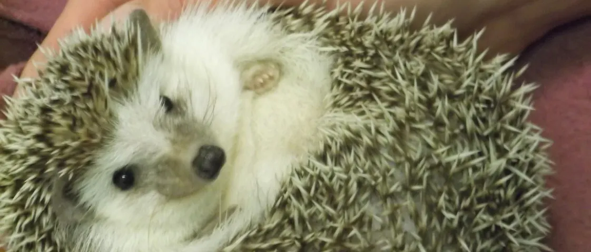
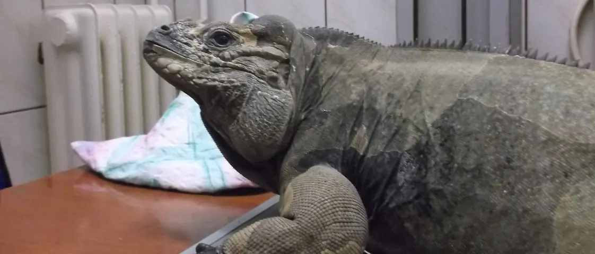
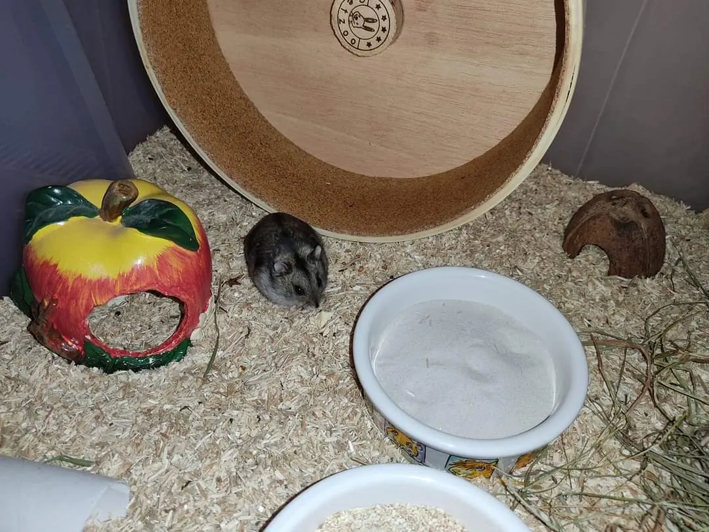
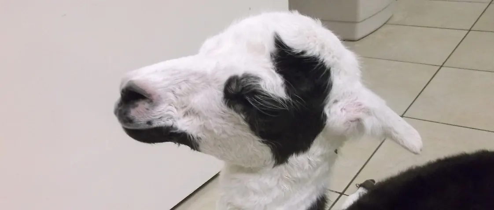
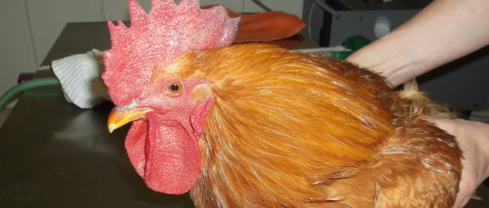
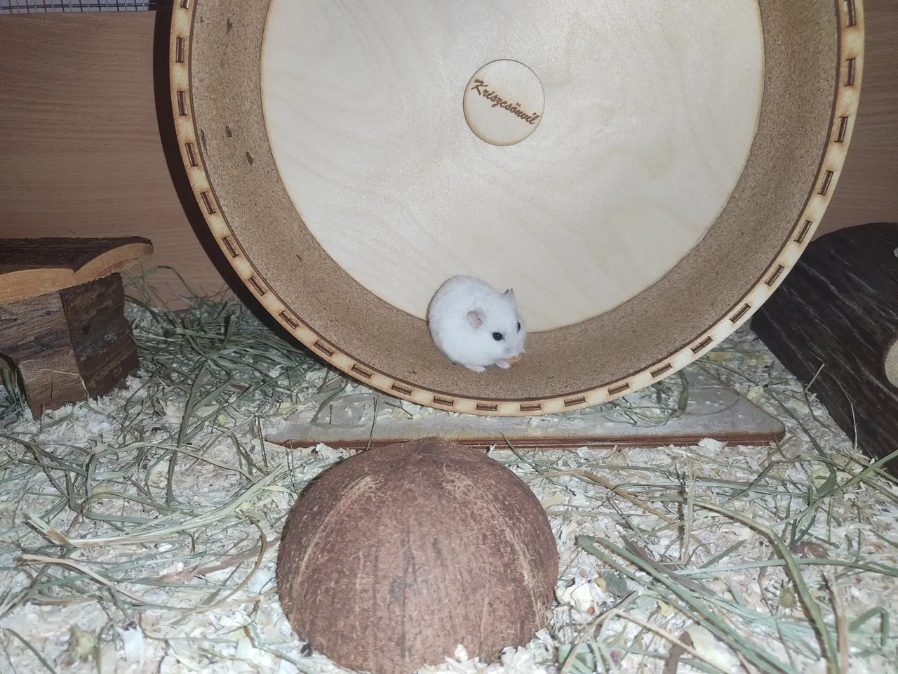
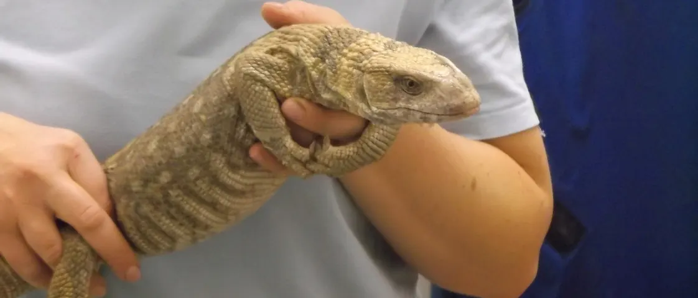
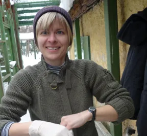
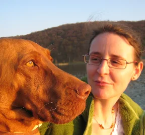
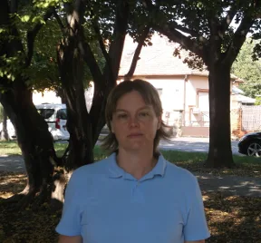

Oltás, kontroll, régóta tartó panasz
Hívja a 72 260 260-at, és időpontot adunk. Ha a napokban nincs hely, másik rendelőbe irányítjuk.
Hívás: 72 260 260Kutya, macska, nyúl, sün, hörcsög: a Kuckó Állategészségügyi Központban időpontra rendelünk. Hívjon, és egyeztetünk.





Rendelőnkben egyszerre egy állatorvos dolgozik, ezért minden beteget előre egyeztetünk. Egy telefon, és kiderül, mikor jöhet.
Hívja a 72 260 260-at, és időpontot adunk. Ha a napokban nincs hely, másik rendelőbe irányítjuk.
Hívás: 72 260 260Előbb telefonáljon. Telefonos egyeztetés után a sürgős esetet felár nélkül fogadjuk.
Időpont nélkül felárral tudjuk ellátni:
Forrás: a rendelő Facebook-közleménye, 2026. november 5.
Tipp: ha telefonon nem éri el a rendelőt, kérjen visszahívást az oldal alján, és ha sorra kerül, visszahívjuk.
Az ambuláns rendeléstől a műtétig: belgyógyászat, sebészet, labor és képalkotás egy helyen, mellette állatpatika és felszerelésbolt.
Időpontot kérekÉlősködők elleni szerek, féregtelenítők, bőrgyógyászati készítmények, vitaminok, porcvédők, gyógytápok (Hill’s, Trovet), fül- és szemcseppek.
Kutya- és macskatápok (tenyésztői tápok is), rágcsálóeleség, jutalomfalat, póráz, hám, szállítóbox, alom.
Egzotikus kisállatok vizsgálata külön szolgáltatásunk. Válassza ki a kedvencét: összegyűjtöttük, mit érdemes tudnia, mielőtt jön.
„Nagyon kedves mindenki, és nagyon alaposak.” – egy gazdi, aki afrikai törpesünnel jár hozzánk (Google-vélemény)

Forrás: a rendelő „Hasznos információk hörcsöggazdiknak” cikke, amely a Hörcsögmentés (Együtt a Kisállatokért Alapítvány) segítségével készült.
Időpontot kérek a hörcsögnek„…mentett nyúllal többször… Horváth Éva doktornő kedves, mindent elmagyaráz.” (Google-vélemény)
Forrás: a rendelő árlistája és „Veszélyes élelmiszerek” cikke.
Időpontot kérek a görénynek
A rendelő képein leguán és varánusz is szerepel.

Állatorvos
2004-ben diplomázott az Állatorvos-tudományi Egyetemen; dolgozott Spanyolországban egy modern kisállatklinikán is. Az állatgyógyászaton belül a sebészet érdekli. Angolul és németül is jól beszél.

Állatorvos
2006-ban kapta meg állatorvosi oklevelét; korábban a Mohácsi Állatkórház munkatársa volt. „2011 márciusától a gyógyítás is visszatér a mindennapjaimba.”

Asszisztens
Évekig állatmenhelyen dolgozott, oktatásszervezőként, majd telepvezetőként. „…szeretném arra használni, hogy az orvosi rendelőben megforduló állatoknak és gazdáiknak segítsek.”
533 Google-vélemény alapján. A Facebookon a gazdik 92%-a ajánlja a rendelőt.
„Nagyon kedves mindenki, és nagyon alaposak.”
„Szuper csapatot alkotnak.”
A sokak által használt acepromazin (Sedalin) nem csökkenti a félelmet, csak lelassítja a kutyát – így a fóbia minden évben erősödik. Van, ami 60 perccel előtte hat, és van, amit heteken át kell adni; a homeopátiás szereket 1–2 nappal korábban kell kezdeni.
A teljes cikkMinden altatással járó műtét előtt javasoljuk a szűrővizsgálatot: az országban rutin ivartalanítás során is volt már elhullás szívférgesség miatt.
A teljes cikkPár hónap alatt alakul ki, és a szívig, veséig hathat. Napi áttörlés, rágócsont, speciális táp lassítja.
A teljes cikkHa a rohamok havonta gyakrabban jönnek, vagy egy roham 10 percnél tovább tart, mindenképpen forduljon állatorvoshoz.
A teljes cikkA heti súlycsökkenés ne legyen több 1–2%-nál; a lefogyás 5–8 hónapig is tarthat. Macskánál 3 hét diéta, 3 hét normál adag váltakozik.
A teljes cikkTisztítás nélkül a fülcsepp nem jut el a hallójáratig. Töltse fel, masszírozza 1–2 percig, hagyja hatni 10 percig, és csak utána cseppentsen.
A teljes cikkIgen. A rendelő időpontra dolgozik: hívja a 72 260 260-as számot, és egyeztetünk.
Előbb telefonáljon a 72 260 260-as számra. Telefonos egyeztetés után a sürgős esetet felár nélkül fogadjuk; a nem sürgős esetnek időpontot adunk, vagy másik rendelőbe irányítjuk.
Időpont nélkül felárral tudjuk ellátni a beteget: hétköznap plusz 8000 Ft, szombaton plusz 24 000 Ft (a rendelő közleménye, 2026. november 5.).
Igen, az egzotikus állatok vizsgálata külön szolgáltatásunk; a gazdik nyúllal és afrikai törpesünnel is járnak hozzánk. Oltási program nyúlnak és vadászgörénynek is van.
Hétfő, kedd, csütörtök, péntek 9:00–12:00 és 13:00–18:00, szerda 9:00–12:00 és 13:00–17:00, szombat 9:00–12:00, vasárnap zárva.
Kérésre kiszállunk; egyeztessen telefonon a 72 260 260-as számon.
Írja meg, kit hozna és mi a gond, és a rendelési időben visszahívjuk, hogy időpontot egyeztessünk. Sürgős esetben ne írjon, hanem hívjon: 72 260 260.
7633 Pécs, Endresz György u. 19.
Útvonal a térképen
Rendelő és patika: +36 72 260 260
kuckodoktor@gmail.com
| Nap | Délelőtt | Délután |
|---|---|---|
| Hétfő | 9–11 | 15–18 |
| Kedd | 9–11 | 15–18 |
| Szerda | 9–11 | 15–17 |
| Csütörtök | 9–11 | 15–18 |
| Péntek | 9–11 | 15–18 |
| Szombat | 9–12 | zárva |
| Vasárnap | zárva | zárva |
| Nap | Délelőtt | Délután |
|---|---|---|
| Hétfő | 9–12 | 13–18 |
| Kedd | 9–12 | 13–18 |
| Szerda | 9–12 | 13–17 |
| Csütörtök | 9–12 | 13–18 |
| Péntek | 9–12 | 13–18 |
| Szombat | 9–12 | zárva |
| Vasárnap | zárva | zárva |